평가계획서 분석 — 실제 백엔드·관리자 화면 적용
2026-11-18 · PR #17(수연님) 위에 쌓은 #18 · 실측: Playwright, 학교알리미 공개 원문
- 평가계획서 분석을 외부 분석기(Railway) 대신 백엔드 안에서 한다. 원문이 서버 밖으로 나가지 않고, 토큰·외부 서비스가 필요 없다.
- 관리자가 학교 이름만 넣으면 학교알리미에서 평가계획서를 받아 학년별로 등록하고 바로 분석한다.
- 과목·지필/수행 비율·수행 항목에 더해 항목별 채점 기준(요소·배점·점수별 기준)을 읽어 수연님 검토 화면에 그대로 띄운다. 화면 코드는 버튼 하나만 더했다.
- 같은 공개 PDF로 비교하면 Railway 분석기는 비율 4과목·채점 기준 0건, 이 분석은 비율 98과목·채점 기준 69건이다. 정기시험 회차·월별 운영 계획(진도표)도 이제 읽는다(Railway 18회차·1,317행, 이 분석 54회차·1,329행).
1. 실제 화면 (Playwright로 조작, 검토 칸만 2배 해상도로 자름)
학교 이름으로 불러오기
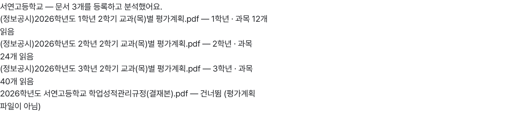

수행평가 항목과 채점기준표 (검토 3단계)
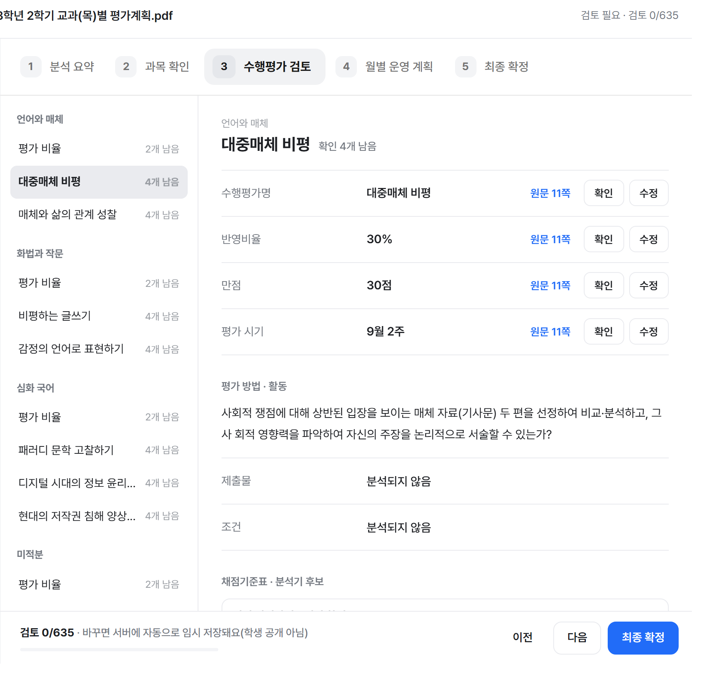
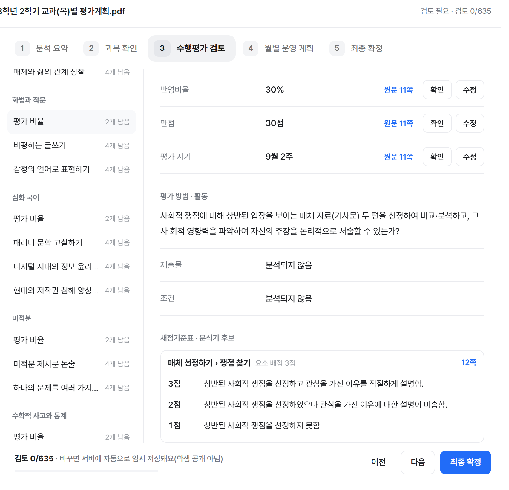
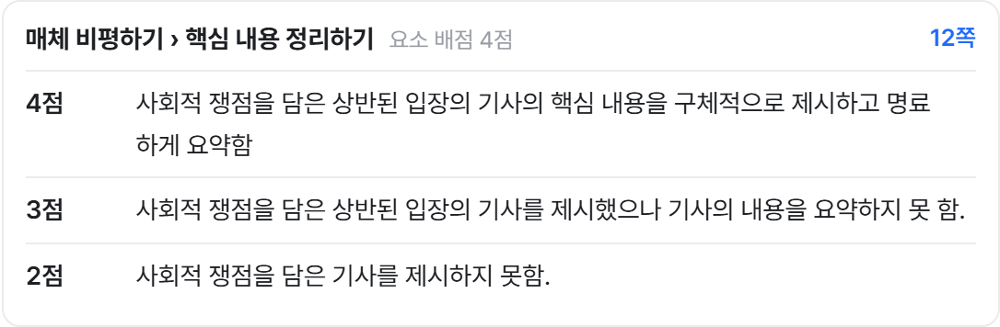
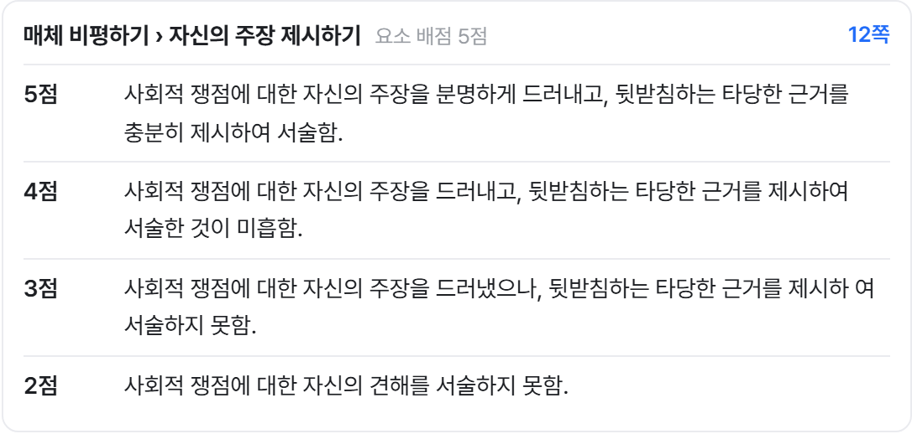
채점기준표는 표 대신 요소별 묶음(점수 | 기준)으로 바꿨다. 검토 칸이 좁으면 표의 기준 칸이 두세 글자 폭으로 줄어 읽을 수 없었다.
정기시험 회차·월별 운영 계획 (작전고)
작전고: 파일 9개 중 8개 등록·분석, 16초. 과목 30개에서 정기시험 회차 47개, 월별 운영 계획 568행.
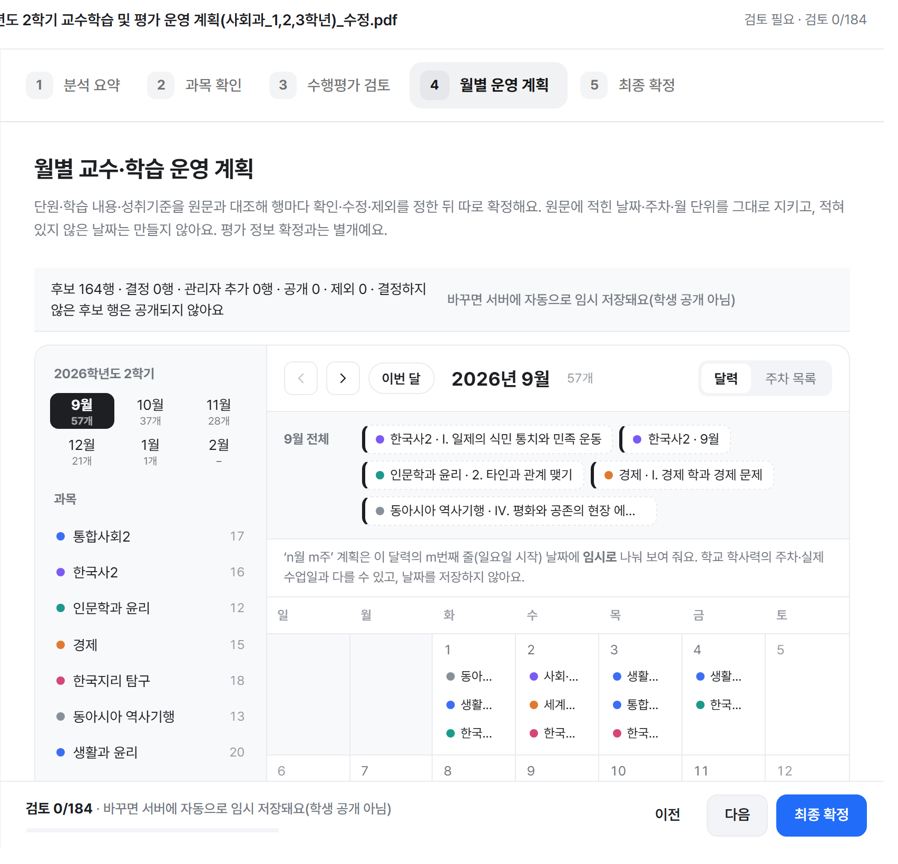
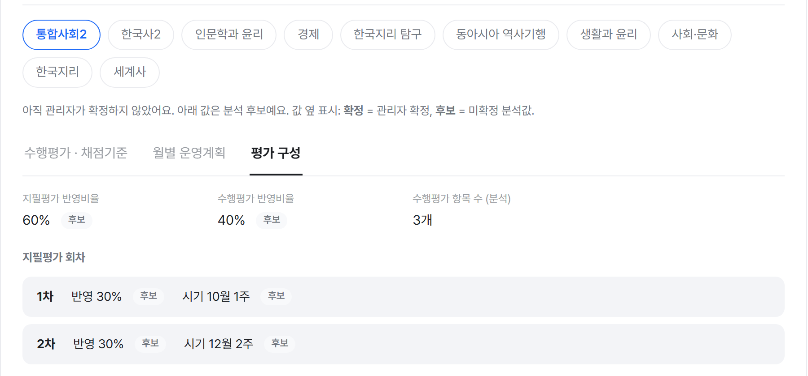
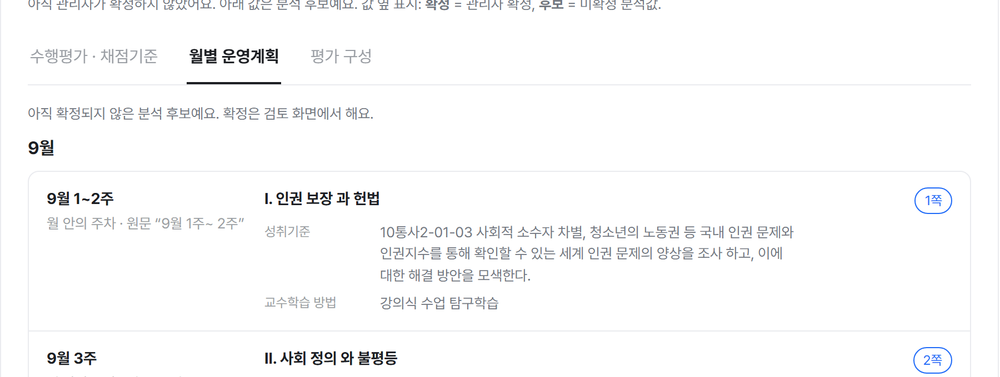
관리자 확정 → 학생 월간 달력
사회과 문서를 시연 학교(운정고) 3학년 2학기에 등록하고 한 과목(17행)을 확정했다. 3학년 학생 달력에는 확정한 17개가 '9월 1~2주' 같은 원문 주차대로 보이고, 1학년 학생에게는 보이지 않는다.
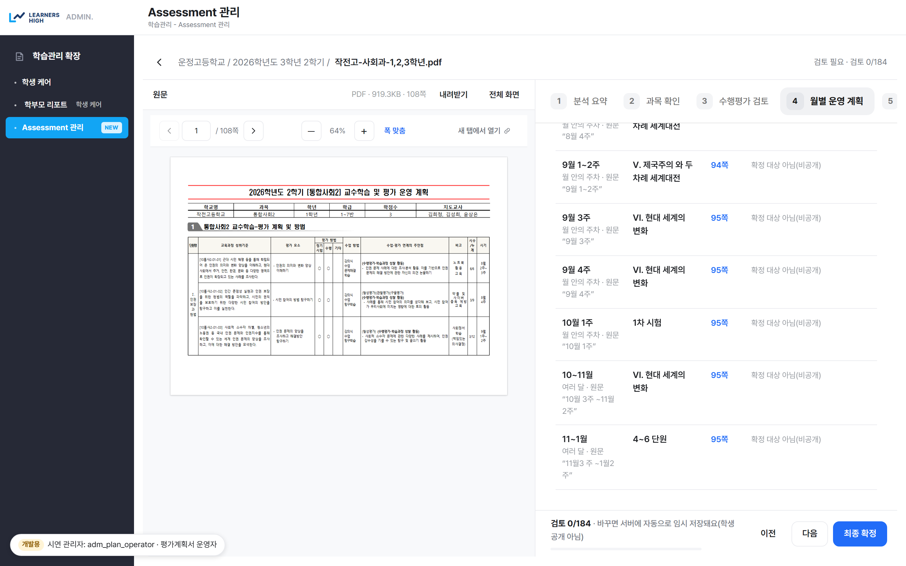
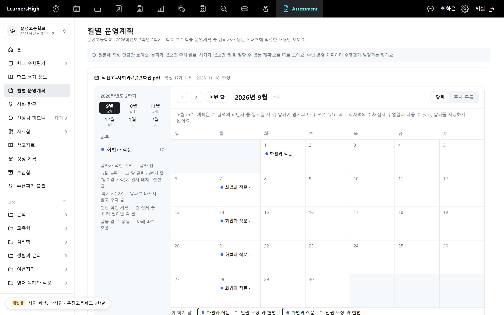
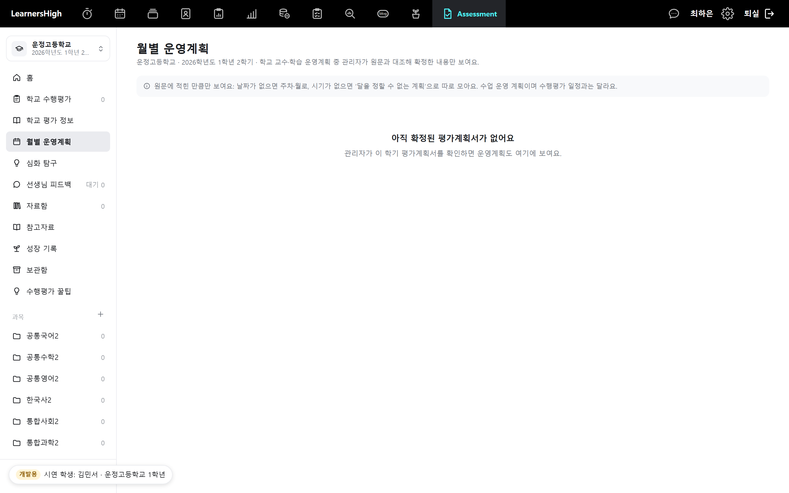
시연 학교 과목 목록(개발용)에 통합사회2가 없어 '화법과 작문'에 연결했다. 실제 학교 과목 목록이 붙으면 같은 과목에 연결된다.
스캔본(OCR)
글자 정보가 없는 PDF 쪽은 그림으로 그려 표 선을 찾고 OCR 단어를 칸에 넣는다. 엔진은 Windows 내장 OCR(설치 불필요) 또는 Tesseract(Linux 서버, apt install tesseract-ocr tesseract-ocr-kor)를 자동으로 고른다(assessment.analyzer.ocr). 둘 다 없으면 스캔 쪽은 건너뛴다.
| 스캔본 | 과목 | 검증 통과 | 수행 항목 | 시간 |
|---|---|---|---|---|
| 명신여고 1학년 (백엔드 API로 실행) | 6 | 5 | 16 | 58초 |
| 인명여고 1학년 | 6 | 4 | 11 | 57초 |
전에는 두 문서 모두 과목 0개(분석 실패)였다. OCR 글자라 과목명·항목명에 오타가 남을 수 있고(예: '는술형'), 세로 글자 칸은 읽지 못한다 — 관리자 검토에서 고친다.
2. 정확도·속도 (받아 둔 학교 113곳 전체)
Java로 옮긴 백엔드 분석과, 그동안 측정한 Python 추출기 결과를 같은 원문으로 비교했다.
| 항목 | 백엔드(Java) | Python | 비율 |
|---|---|---|---|
| 값 있는 과목 | 5,045 | 4,794 | 105% |
| 검증 통과 과목 (항목 비율 합 = 수행 비율) | 4,087 | 4,001 | 102% |
| 수행 항목 | 13,175 | 12,148 | 108% |
| 채점 기준이 붙은 항목 | 7,487 | 7,202 | 104% |
| 채점 요소 만점 합 = 과제 만점 | 7,167 | 6,845 | 105% |
| 정기시험 회차 (과목 수) | 2,704 (1,643) | — | |
| 월별 운영 계획 행 (과목 수) | 71,303 (3,864) | — |
학교 하나(평가계획 파일 전부) 처리 시간: 중앙 2.7초, 상위 10% 12.5초, 최대 36.7초(회차·진도표 포함). 원문 표본 대조(Python 기준 측정): 비율·항목 값 100건 중 95~99건 일치, 채점 기준 합 일치 95%.
파일 오류 2건: 하나는 이름이 .hwp 인 HWPX 파일을 측정 코드가 확장자로 읽어서였고(제품은 내용으로 형식을 정해 문제없음, 측정 코드 고침), 다른 하나는 113곳을 한 JVM(512MB)에서 이어 돌릴 때만 나는 메모리 부족이다 — 해당 파일을 단독으로 돌리면 정상(선부고 56과목, 광명북고 54과목). 창의·청명·성덕고 등 몇 곳은 Python보다 검증 통과 과목이 적다(과목명 이어받기 규칙 차이).
3. 수연님 분석기(Railway)와 같은 파일 비교
학교알리미 공개 PDF 14개(학교당 1개, 120쪽 이하)를 두 분석기에 같은 계약(0.3)으로 보냈다.
| 항목 (14개 합계) | Railway | 이 분석 |
|---|---|---|
| 지필·수행 비율이 있는 과목 | 4 | 98 |
| 수행 항목 / 비율 있는 항목 | 28 / 3 | 189 / 179 |
| 채점 기준이 붙은 항목 | 0 | 69 |
| 정기시험 회차(writtenEvaluation.exams) | 18 | 54 |
| 월별 운영 계획 행(teachingPlan) / 과목 | 1,317 / 113 | 1,329 / 106 |
| 처리 시간 중앙값 | 3.5초 | 1.5~3.8초 |
회차·운영 계획 두 줄은 백엔드(Java) 판, 나머지 줄은 Python 판(같은 규칙). 회차는 회차 비율 합이 지필 비율과 맞을 때만 낸다. Python 판은 도형이 매우 많은 쪽에서 표 찾기가 느려 113쪽 문서 하나가 260초 걸렸다. 백엔드(Java) 판은 같은 문서를 포함한 113곳 측정에서 학교당 최대 37초였다.
4. 바꾼 것
| 곳 | 내용 |
|---|---|
| 백엔드 분석 | assessment.analyzer.mode = local(기본) · http(예전 외부 분석기) · none. local은 PDF(PDFBox 선 읽기)·HWP/HWPX(기존 구조 리더) 표를 읽어 규칙으로 분석하고 기존 수신 계약(analysis-import 0.3) 모양으로 넘긴다. 이후 검증·저장·검토·확정은 그대로. |
| 학교 이름 불러오기 | POST /api/admin/assessment/evaluation-plans/import-from-schoolinfo — 학교알리미 받기 → 학년별 등록 → 분석. API 계약 §38-11에 적음. |
| 관리자 화면 | 평가계획서 목록에 "학교알리미에서 불러오기" 버튼·대화상자. |
| 시험 | 백엔드 단위 시험 전부 통과(기존 시험은 mode=none·http로 그대로 유지), 관리자 타입 검사·lint 통과. |
5. 간소화·최적화 (반영)
- 검토 테이블 9개 → 7개: 운영계획 확정을 평가 정보 확정 테이블로 합치고(scope = EVALUATION · TEACHING_PLAN), 초안 저장 이력 테이블은 초안 행의 history_json(최근 20건)으로 옮겼다. 마이그레이션 V202611180100이 기존 데이터를 옮긴다. API 응답 모양은 그대로다. 초안은 동시 편집 버전 검사(409)가 있어 따로 둔다.
- 불러오기 비동기 + 진행바: 받기·등록 뒤 바로 응답(202 + 작업 번호)하고, 분석은 서버 작업 1개가 차례로 돌린다(서버 사양 고려). 화면은 1.5초마다 진행 상황을 읽어 '분석 n/m' 진행바를 그린다. 같은 파일의 학년별 문서는 한 줄로 묶는다. 작전고 22개 문서: 7초에 응답, 29초에 22/22.
- 그 밖: 외부 분석기 연결 코드·토큰 제거와 수신 계약 0.3 일원화는 시험이 아직 그 경계에 묶여 있어 다음 단계로 둔다.
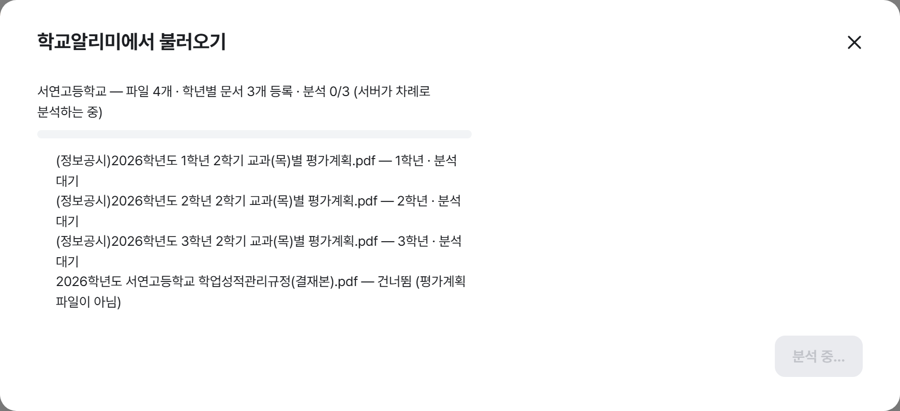
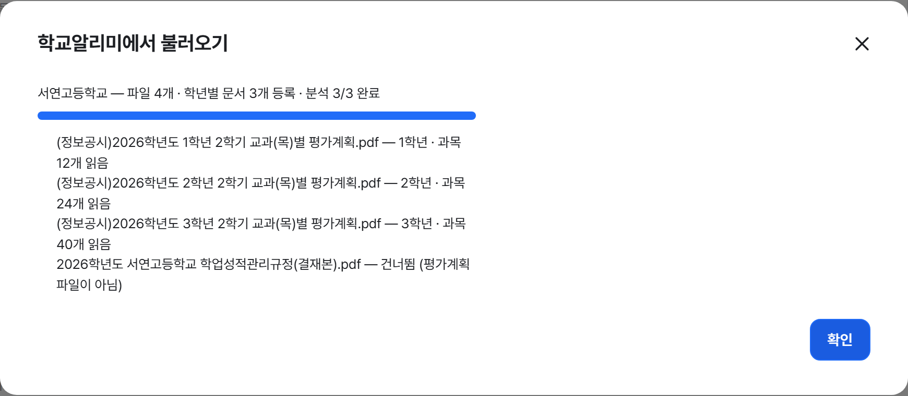
5-2. 병목·사용감 개선 (2026-11-19)
| 문제 (측정) | 바꾼 것 | 결과 |
|---|---|---|
| '1,2,3학년' 파일을 학년마다 다시 분석 — 작전고 8개 파일을 22번 | 같은 원문(SHA·파일 이름·계약·버전)은 최근 결과 8개를 재사용 | 분석 8번 + 재사용 14번, 불러오기 29초 → 18초 |
| 학년별 문서에 다른 학년 과목이 섞임 | 과목 머리 표의 '학년' 칸을 읽어 계약 subjects[].grades로 보냄 — 기존 규칙대로 다른 학년 문서에서는 확정되지 않고 '원문 N학년'으로 보임 | 작전고 사회과: 1학년 2 · 2학년 4 · 3학년 4과목 |
| 검토 칸 184~635개를 하나씩 클릭 | '이 항목 후보 그대로 확인' · '과목 남은 후보 그대로 확인' · 운영계획 '남은 n행 모두 확인' | 통합사회2 18칸을 한 번에(칸마다 수정·되돌리기 유지) |
| 스캔본 문서당 약 55초, 쪽 그림을 모두 메모리에 보관(80쪽이면 약 300MB) | 쪽마다 표 선만 남기고 그림은 바로 버림, 표 없는 쪽은 OCR 생략, 픽셀 한 줄씩 읽기 | 메모리 해결. 시간은 OCR 자체(쪽당 약 0.45초)라 그대로 — 비동기라 기다리지 않음. 150dpi는 10% 빠르지만 결과가 달라져 쓰지 않음 |
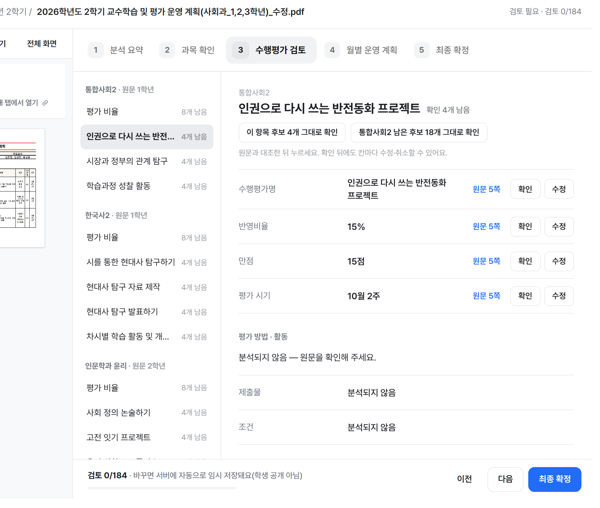
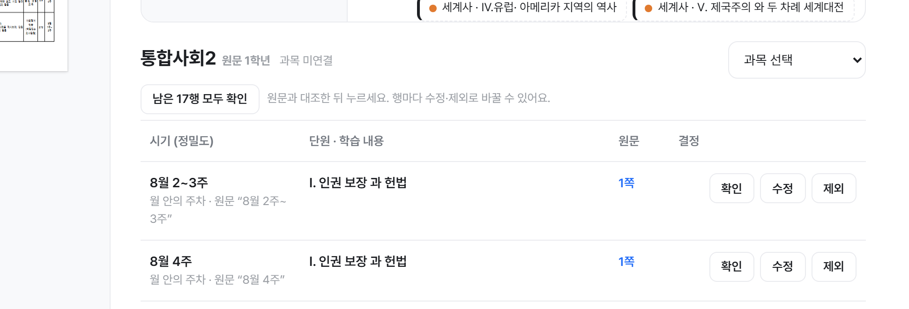
6. 남은 일
- 여러 학년 공통 문서('1,2,3학년'·'1~3학년'·'전학년')는 이제 학년마다 등록한다. 한 학년 문서에 다른 학년 과목도 들어 있어 관리자가 과목 확인 단계에서 걸러야 한다.
- OCR 오타 보정은 실측 2개 학교에서 본 것만 넣었다. 스캔본이 늘면 보정 목록을 늘린다.